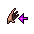
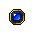
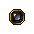
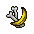
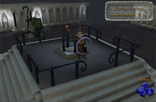
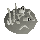
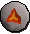
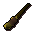

")
Die Schule der magischen Künste
Einführung | Lage | Voraussetzungen | Empfohlene Ausrüstung
Telekinetisches Theater | Spielzimmer der Alchemisten | Verzauberkammer | Friedhof der Gruseltiere
Belohnungen | Entwicklung
Telekinetisches Theater | Spielzimmer der Alchemisten | Verzauberkammer | Friedhof der Gruseltiere
Belohnungen | Entwicklung
Nur RuneScape-Mitglieder haben Zugang zu diesem Minispiel. Wenn ihr euch anmeldet, könnt auch ihr dieses Feature nutzen.
Bitte beachtet, dass es sich hierbei um ein 'sicheres' Minispiel handelt. Falls ihr während des Minispiels sterbt, behaltet ihr alle eure Gegenstände.
Einführung

In diesem Gebäude könnt ihr euch durch vier Minispiele EP in Magie verdienen und gleichzeitig Punkte sammeln, die ihr im Laden der magischen Künste gegen Gegenstände eintauschen könnt.
In jedem der vier Räume der Schule (die man per Teleport im hinteren Teil des Gebäudes betritt) könnt ihr euch individuelle - das heißt, auf den Raum zugeschnittene - Peppies verdienen:
- Telekinese-Peppies im telekinetischen Theater
- Alchemie-Peppies im Spielzimmer der Alchemisten
- Verzauber-Peppies in der Verzauberkammer
- Friedhof-Peppies auf dem Friedhof der Gruseltiere
![[Bild]](../../img/main/kbase/minigames/mage_training/exit_portal.gif) In keinem der Räume gibt es eine zeitliche Begrenzung. Ihr könnt also so lange Peppies sammeln, wie ihr mögt, und dann die Räume durch die Portale verlassen.
In keinem der Räume gibt es eine zeitliche Begrenzung. Ihr könnt also so lange Peppies sammeln, wie ihr mögt, und dann die Räume durch die Portale verlassen. Wenn ihr mit eurer Karriere in der Schule der magischen Künste beginnen wollt, müsst ihr als Erstes mit dem Wächter am Eingang sprechen.
Er wird euch einen Überblick über die Schule geben und euch eine besondere Mütze geben, mit deren Hilfe ihr euren Fortschritt nachverfolgen könnt (wenn ihr sie je verlieren solltet, wird er euch kostenlos eine neue geben).
![[Bild]](../../img/main/kbase/minigames/mage_training/mage_trainingbook.gif) Wenn ihr eure Peppies habt, könnt ihr die Treppe in der Eingangshalle hochgehen und der Schatz-Wache einen Besuch abstatten. Am Ende dieses Artikels erfahrt ihr, welche Belohnungen euch zustehen. Von der Schatz-Wache könnt ihr für 200 Goldmünzen auch ein Magieschulen-Buch kaufen. Dort könnt ihr nachlesen, wie ihr die verschiedenen Räume am besten nutzen könnt.
Wenn ihr eure Peppies habt, könnt ihr die Treppe in der Eingangshalle hochgehen und der Schatz-Wache einen Besuch abstatten. Am Ende dieses Artikels erfahrt ihr, welche Belohnungen euch zustehen. Von der Schatz-Wache könnt ihr für 200 Goldmünzen auch ein Magieschulen-Buch kaufen. Dort könnt ihr nachlesen, wie ihr die verschiedenen Räume am besten nutzen könnt. Wenn ihr in einem der vier Räume in der Arena sterben solltet, werdet ihr wieder zum Eingang teleportiert. Ihr behaltet alle Gegenstände, mit denen ihr die Schule ursprünglich betreten habt. Die Gegenstände, die es nur in der Schule der magischen Künste gibt, werdet ihr allerdings verlieren. Das gilt auch für Geld, das ihr im Spielzimmer der Alchemisten hergestellt habt, und Peppies, die ihr für das Geld erhalten habt. Wenn ihr euch ausloggt, während ihr euch in der Schule befindet, wird euer Charakter wieder zum Eingang teleportiert, sobald ihr euch das nächste Mal wieder einloggt.
Die Peppie-Murmelmütze
Um die einzelnen Räume zu betreten, müsst ihr die Murmelmütze entweder tragen oder in eurem Inventar haben.Mit der Murmelmütze könnt ihr nur eine bestimmte Anzahl an Punkten sammeln. Selbst wenn ihr die obere Grenze erreicht habt, könnt ihr noch weiter in den Räumen trainieren, ihr bekommt nur keine weiteren Peppies. Hier eine Übersicht über die Maximalanzahl, die ihr jeweils sammeln könnt:
| Friedhof-Peppies | 4,000 |
| Telekinese-Peppies | 4,000 |
| Alchemie-Peppies | 8,000 |
| Verzauber-Peppies | 16,000 |
Bitte beachtet, dass wenn ihr aus irgendeinem Grund eure Peppies-Murmelmütze zerstören solltet, ihr alle eure gesammelten Peppies verlieren werdet.
Die Peppies-Murmelmütze wird ihre Farbe ändern, um anzuzeigen, wie viele Peppies ihr noch sammeln könnt. Es gibt drei verschiedene Phasen: matt, energiegeladen und voll.
Lage


Voraussetzungen
Für jeden Raum sind verschiedene Zaubersprüche erforderlich, damit ihr die Aufgaben erfüllt und euch die Peppies verdient. Ihr benötigt allerdings nur die jeweils niedrigste Stufe, um das Portal zu betreten. Um zu erfahren, welche Runen ihr für welche Zaubersprüche braucht, lest euch bitte die Abschnitte Kampfzauber und Außerhalb des Kampfs in unserem Kapitel über Magie durch.
Bitte beachtet, dass ihr in die Trainingsräume keine Gegenstände mitnehmen könnt, die euch dort helfen könnten. Ihr dürft beispielsweise keine Goldmünzen mit in das Spielzimmer der Alchemisten nehmen oder Bananen und Pfirsiche zum Friedhof der Gruseltiere. Diese Gegenstände könnt ihr auch nicht aus dem Raum mitnehmen - weder durch Teleport noch wenn ihr sterbt.
Noch ein Hinweis: Da die 'Permutio'-Zaubersprüche so einfach sind, bekommt ihr dafür etwas weniger EP.
| Raum | Zauberspruch | Benötigte Stufen |
| Telekinetisches Theater | Telekinese | 33 |
| Raum | Zauberspruch | Benötigte Stufen |
| Spielzimmer der Alchemisten |
![[Bild]](../../img/main/kbase/skills/magic/spells/low_level_alchemy1.gif) Niedere Alchemie Niedere Alchemie |
21 |
![[Bild]](../../img/main/kbase/skills/magic/spells/high_level_alchemy1.gif) Hohe Alchemie Hohe Alchemie |
55 |
| Raum | Zauberspruch | Benötigte Stufen |
| Verzauberkammer | Permutio St. I Verzauberter Schmuck |
7 |
![[Bild]](../../img/main/kbase/skills/magic/spells/lvl_2_enchant1.gif) Permutio PermutioSt. II Verzauberter Schmuck |
27 |
|
![[Bild]](../../img/main/kbase/skills/magic/spells/lvl_3_enchant1.gif) Permutio PermutioSt. III Verzauberter Schmuck |
49 |
|
![[Bild]](../../img/main/kbase/skills/magic/spells/lvl_4_enchant1.gif) Permutio PermutioSt. IV Verzauberter Schmuck |
57 |
|
![[Bild]](../../img/main/kbase/skills/magic/spells/lvl_5_enchant1.gif) Permutio PermutioSt. V Verzauberter Schmuck |
68 |
|
| Permutio St. VI Verzauberter Schmuck |
87 |
| Raum | Zauberspruch | Benötigte Stufe |
| Friedhof der Gruseltiere | Knochen zu Bananen | 15 |
![[Bild]](../../img/main/kbase/skills/magic/spells/bones_to_peaches1.gif) Knochen zu Pfirsiche Knochen zu Pfirsiche |
60 |
Empfohlene Ausrüstung
Um dieses Minispiel abzuschließen, empfehlen wir euch, die folgenden Gegenstände mitzubringen:
| Gegenstand | Hier erhältlich | Nutzen in der Schule der magischen Künste |
![[Bild]](../../img/main/kbase/minigames/mage_training/progresshat_dull.gif) Murmelmütze Murmelmütze |
Diesen Gegenstand erhaltet ihr, sobald ihr mit dem Wächter am Eingang der Schule der magischen Künste sprecht. | Wenn ihr dieses Minispiel spielt, ist diese Mütze ein grundlegender Gegenstand. Wenn ihr mit ihr sprecht, erfahrt ihr, wie viele Verzauber-, Telekinese-, Alchemie- und Friedhofs-Peppies ihr bereits gesammelt habt. |
![[Bild]](../../img/main/kbase/items/runes/lrune.gif) Runen Runen |
Runen könnt ihr in Läden kaufen, selbst herstellen oder als Belohnung für das Töten von Monstern erhalten. | Sie werden benötigt, um die Zaubersprüche in den verschiedenen Räumen auszuführen. |
![[Bild]](../../img/main/kbase/items/rings/emering.gif) Duell-Ring Duell-Ring |
Dieser Ring kann von Spielern hergestellt werden. | Mit diesem Ring könnt ihr euch zur Duell-Arena teleportieren, die nur einen Katzensprung von der Schule der magischen Künste entfernt ist. Wie ihr einen Duell-Ring herstellt, könnt ihr im Kapitel Handwerk nachlesen. Wie ihr den Ring verzaubert, erfahrt ihr im Kapitel Magie. |
Telekinetisches Theater

Um die Statue beispielsweise nach Norden zu bewegen, müsst ihr euch an die nördliche Seite des Labyrinths stellen - und um die Statue nach Westen zu bewegen, müsst ihr euch an der westlichen Seite positionieren. Die Statue kann nicht diagonal bewegt werden, und auch nicht von den Ecken des Labyrinths aus.
Die Statue wird sich weiterbewegen, bis sie an ein Hindernis stößt, das ihr den Weg versperrt. Eure Aufgabe ist es, die Statue um diese Hindernisse herumzubewegen.
Wenn ihr das telekinetische Theater verlasst, ohne das Labyrinth abgeschlossen zu haben, kehrt ihr beim nächsten Mal in ein anderes Labyrinth zurück. Die Statue befindet sich dann wieder in der Ausgangsposition.
Die Statue besitzt auch die Funktion 'Beobachten'. Wenn ihr sie auswählt, verändert sich der Blickwinkel der Kamera so, dass ihr das Labyrinth besser seht, wodurch die Aufgabe leichter wird. Wenn ihr diese Option ein zweites Mal auswählt, wechselt die Perspektive wieder zu eurer eigenen. Das geschieht auch, wenn ihr euch zu weit aus dem Umkreis des Labyrinths entfernt.
Wenn ihr es schafft, ein Labyrinth abzuschließen, werdet ihr mit 2 Telekinese-Peppies belohnt. Die Statue, die ihr zum Ausgang gebracht hat, wird sich in einen Wächter verwandeln, mit dem ihr sprechen könnt. Wenn ihr das tut, wird er euch zum nächsten Labyrinth teleportieren.
![[Bild]](../../img/main/kbase/minigames/mage_training/telekinetic_theatre_count.gif) Am Rand des Spielfensters seht ihr eine Nummer - diese zeigt euch an, wie viele Labyrinthe ihr hintereinander gelöst habt. Wenn ihr es schafft, 5 Labyrinthe nacheinander abzuschließen, erhaltet ihr zusätzlich 8 Telekinese-Peppies, 1.000 EP in Magie und 10 Gesetzes-Runen. Um ein Labyrinth abzuschließen, benötigt man durchschnittlich jeweils 8,3 Luft-Runen und 8,3 Gesetzes-Runen. Dafür erhaltet ihr 2 Peppies.
Am Rand des Spielfensters seht ihr eine Nummer - diese zeigt euch an, wie viele Labyrinthe ihr hintereinander gelöst habt. Wenn ihr es schafft, 5 Labyrinthe nacheinander abzuschließen, erhaltet ihr zusätzlich 8 Telekinese-Peppies, 1.000 EP in Magie und 10 Gesetzes-Runen. Um ein Labyrinth abzuschließen, benötigt man durchschnittlich jeweils 8,3 Luft-Runen und 8,3 Gesetzes-Runen. Dafür erhaltet ihr 2 Peppies. Die Zahl der von euch abgeschlossenen Labyrinthe wird gespeichert, sodass ihr weitermachen könnt, wenn ihr euch zwischendurch ausloggt oder an andere Orte geht.
Das Spielzimmer der Alchemisten

In diesem Raum befinden sich ein Wächter (der alle eure Fragen zum Thema beantworten wird), 8 Regale (siehe Abbildung oben) und ein Loch in der Wand, in dem man Goldmünzen deponieren kann. In den Regalen gibt es 5 verschiedene Gegenstände: Leder-Stiefel, einen Adamant-Pentaschild, einen Adamant-Halbhelm, einen Smaragd und ein Runit-Langschwert. Wo sich die jeweiligen Gegenstände befinden, ändert sich von Zeit zu Zeit, wobei auch die Werte der Gegenstände sich verändern (sie können eine, 5, 8, 15 oder 30 Goldmünzen wert sein). Dabei spielt es keine Rolle, ob ihr die Zaubersprüche 'Niedere Alchemie' oder 'Hohe Alchemie' einsetzt. Bei letzterem erhaltet ihr zwar mehr EP, aber nicht mehr Geld als mit dem Zauber 'Niedere Alchemie'.
Die Gegenstände, die ihr in diesem Raum findet, könnt ihr nicht mitnehmen. Ihr könnt sie auch nicht anziehen/handhaben oder mit ihnen handeln.
Oben rechts im Spielfenster seht ihr eine Liste, die die jeweiligen Werte der Gegenstände (siehe oben) anzeigt. Manchmal erscheint auch ein grüner Pfeil neben einem der Gegenstände (in der Abbildung oben zeigt der Pfeil auf den Adamant-Pentaschild). Das heißt, dass es gerade keine Runen kostet, diesen Gegenstand zu verwandeln.
Eure Aufgabe ist es also, die Gegenstände in den Regalen zu finden, und sie zum richtigen Zeitpunkt zu verwandeln, um so viele Goldmünzen wie möglich zu erhalten. Es wäre ratsam, jeweils den Gegenstand zu suchen, auf den der grüne Pfeil gerade zeigt, da ihr so Erfahrung und Peppies sammeln könnt, ohne dass ihr Runen für den Zauber verbrauchen müsst.
Diese Goldmünzen müsst ihr dann in die Spendenbüchse im hinteren Teil des Raumes deponieren. Dafür erhaltet ihr Peppies (und zwar jeweils 1 % der Goldmünzen, die ihr hineinlegt). Außerdem werden 10 % der von euch umgewandelten Goldmünzen direkt in euer Bankschließfach eingezahlt, sobald ihr das Spielzimmer der Alchemisten verlasst. Wenn ihr den Raum aber verlasst, ohne die Goldmünzen deponiert zu haben, erhaltet ihr keine Peppies oder zusätzliche Goldmünzen in eurem Schließfach. Wenn ihr versucht, den Raum zu verlassen, erhaltet ihr dazu noch eine zusätzliche Warnung.
Verzauberkammer

In diesem Raum gibt es vier verschiedene Arten von Formen: Würfel, Pyramiden, zwanzigseitige Würfel und Zylinder.
![[Bild]](../../img/main/kbase/minigames/mage_training/mage_object_yellow.gif) Würfel Würfel |
![[Bild]](../../img/main/kbase/minigames/mage_training/mage_object_red.gif) Pyramide Pyramide |
![[Bild]](../../img/main/kbase/minigames/mage_training/mage_object_blue.gif) Zwanzigseiter Zwanzigseiter |
![[Bild]](../../img/main/kbase/minigames/mage_training/mage_object_green.gif) Zylinder Zylinder |
![[Bild]](../../img/main/kbase/minigames/mage_training/enchant_shape.gif) Auf diese Gegenstände könnt ihr, nachdem ihr sie eingesammelt habt, eure 'Permutio'-Zauber sprechen, um sie in weiße Kugeln zu verwandeln. Diese weißen Kugeln könnt ihr dann in dem Sammelbecken auf dem Podium in der Mitte des Raums deponieren. Ihr könnt die Gegenstände entweder alle einzeln oder alle gleichzeitig ablegen, indem ihr sie rechtsklickt und dann an dem Loch die Option 'Deponieren' auswählt.
Auf diese Gegenstände könnt ihr, nachdem ihr sie eingesammelt habt, eure 'Permutio'-Zauber sprechen, um sie in weiße Kugeln zu verwandeln. Diese weißen Kugeln könnt ihr dann in dem Sammelbecken auf dem Podium in der Mitte des Raums deponieren. Ihr könnt die Gegenstände entweder alle einzeln oder alle gleichzeitig ablegen, indem ihr sie rechtsklickt und dann an dem Loch die Option 'Deponieren' auswählt. ![[Bild]](../../img/main/kbase/minigames/mage_training/mage_object_orb.gif) Für jede 20. Kugel, die ihr deponiert habt, erhaltet ihr entweder 3 Kosmos-Runen, 3 Blut-Runen oder 3 Jenseits-Runen (das wird per Zufall bestimmt). Wenn ihr eine Form verwandelt, die in der Ecke des Spielfensters angezeigt wird, erhaltet ihr einen Bonus-Peppie (egal, welchen Zauber ihr verwendet habt und um welche Form es sich handelt). Pro 10 verwandelten Formen erhaltet ihr außerdem weitere Bonus-Peppies. Die Anzahl dieser Peppies hängt von der Stufe eures Permutio-Zaubers ab - es ist also ratsam, den höchststufigsten Spruch zu benutzen, um die jeweils zehnte Form zu verwandeln (wenn ihr so viele Peppies wie möglich sammeln wollt). Das Verzaubern der Formen bringt euch folgende Belohnungen/Kosten:
Für jede 20. Kugel, die ihr deponiert habt, erhaltet ihr entweder 3 Kosmos-Runen, 3 Blut-Runen oder 3 Jenseits-Runen (das wird per Zufall bestimmt). Wenn ihr eine Form verwandelt, die in der Ecke des Spielfensters angezeigt wird, erhaltet ihr einen Bonus-Peppie (egal, welchen Zauber ihr verwendet habt und um welche Form es sich handelt). Pro 10 verwandelten Formen erhaltet ihr außerdem weitere Bonus-Peppies. Die Anzahl dieser Peppies hängt von der Stufe eures Permutio-Zaubers ab - es ist also ratsam, den höchststufigsten Spruch zu benutzen, um die jeweils zehnte Form zu verwandeln (wenn ihr so viele Peppies wie möglich sammeln wollt). Das Verzaubern der Formen bringt euch folgende Belohnungen/Kosten: | Stufe des Permutio- Zaubers |
Peppies für Drachenstein |
Peppies für gewöhnliche Gegenstände |
Bonus-Peppies für 10. Gegenstand |
| 1 | 2 | 1 | 1 |
| 2 | 4 | 1 | 2 |
| 3 | 6 | 1 | 3 |
| 4 | 8 | 1 | 4 |
| 5 | 10 | 1 | 5 |
| 6 | 12 | 1 | 6 |
Friedhof der Gruseltiere

Aus den verschiedenen Knochenhaufen erhaltet ihr verschiedene Arten von Knochen, die ihr in Bananen oder Pfirsiche verwandeln könnt. Wenn ihr euch 4 Knochen aus einem Knochenhaufen genommen habt, verwandelt er sich in einen Knochenhaufen anderen Typs.
Für jede 16. Banane, die ihr in der Wand deponiert, erhaltet ihr entweder eine Wasser-, Erd-, Natur-, Jenseits- oder Blut-Rune, einen Friedhofs-Peppie und 25 EP in Magie. Solltet ihr im Friedhof der Gruseltiere sterben, werden euch zur Strafe 10 Friedhof-Peppies abgezogen.
| Knochenhaufen | Gegenstand im Inventar |
Zahl der erhaltenen Bananen/Pfirsiche |
![[Bild: Form eines Knochenhaufens]](../../img/main/kbase/minigames/mage_training/bonepile4.gif "Form eines Knochenhaufens") |
![[Bild: Knochen, die man von dem Haufen nimmt]](../../img/main/kbase/minigames/mage_training/mage_bones1.gif "Knochen, die man von dem Haufen nimmt") |
1 |
|  | ![[Bild: Knochen, die man von dem Haufen nimmt]](../../img/main/kbase/minigames/mage_training/mage_bones2.gif "Knochen, die man von dem Haufen nimmt") |
2 |
![[Bild: Form eines Knochenhaufens]](../../img/main/kbase/minigames/mage_training/bonepile2.gif "Form eines Knochenhaufens") |
![[Bild: Knochen, die man von dem Haufen nimmt]](../../img/main/kbase/minigames/mage_training/mage_bones3.gif "Knochen, die man von dem Haufen nimmt") |
3 |
![[Bild: Form eines Knochenhaufens]](../../img/main/kbase/minigames/mage_training/bonepile1.gif "Form eines Knochenhaufens") |
![[Bild: Knochen, die man von dem Haufen nimmt]](../../img/main/kbase/minigames/mage_training/mage_bones4.gif "Knochen, die man von dem Haufen nimmt") |
4 |
Belohnungen
Ihr könnt die Peppies, die ihr in jedem der Räume erworben habt, austauschen, indem ihr von der Eingangshalle aus nach oben geht (sowohl links als auch rechts gibt es eine Treppe). Im hinteren Teil des Raums findet ihr die Schatz-Wache. Wenn ihr mit ihr sprecht, könnt ihr eure Peppies gegen die folgenden Gegenstände eintauschen:
| Kleidung | Peppies | |||
| Telekinese | Alchemie | Verzauberung | Friedhof | |
![[Bild]](../../img/main/kbase/armour/mage/infinity_boots.gif) Phantom-Stiefel Phantom-Stiefel |
120 | 120 | 1200 | 120 |
![[Bild]](../../img/main/kbase/armour/mage/infinity_gloves.gif) Phantom-Handschuhe Phantom-Handschuhe |
175 | 225 | 1500 | 175 |
![[Bild]](../../img/main/kbase/armour/mage/infinity_hat.gif) Phantom-Hut Phantom-Hut |
350 | 400 | 3000 | 350 |
![[Bild]](../../img/main/kbase/armour/mage/infinity_robetop.gif) Phantom-Robe Phantom-Robe |
400 | 450 | 4000 | 400 |
![[Bild]](../../img/main/kbase/armour/mage/infinity_robebottom.gif) Phantom-Robenunterteil Phantom-Robenunterteil |
450 | 500 | 5000 | 450 |
Im Kapitel 'Magie' der Spielanleitung erfahrt ihr im Abschnitt Magische Roben, welche Stufen ihr braucht, um die Kleidungsstücke zu tragen.
| Runen | Peppies | |||
| Telekinese | Alchemie | Verzauberung | Friedhof | |
![[Bild]](../../img/main/kbase/items/runes/mistrune.gif) Nebel-Rune Nebel-Rune |
1 | 1 | 15 | 1 |
![[Bild]](../../img/main/kbase/items/runes/dustrune.gif) Staub-Rune Staub-Rune |
1 | 1 | 15 | 1 |
![[Bild]](../../img/main/kbase/items/runes/mudrune.gif) Schlamm-Rune Schlamm-Rune |
1 | 1 | 15 | 1 |
![[Bild]](../../img/main/kbase/items/runes/smokerune.gif) Rauch-Rune Rauch-Rune |
1 | 1 | 15 | 1 |
![[Bild]](../../img/main/kbase/items/runes/steamrune.gif) Dampf-Rune Dampf-Rune |
1 | 1 | 15 | 1 |
| Lava-Rune | 1 | 1 | 15 | 1 |
![[Bild]](../../img/main/kbase/items/runes/nrune.gif) Natur-Rune Natur-Rune |
0 | 1 | 0 | 1 |
![[Bild]](../../img/main/kbase/items/runes/crune.gif) Kosmos-Rune Kosmos-Rune |
0 | 0 | 5 | 0 |
![[Bild]](../../img/main/kbase/items/runes/chrune.gif) Chaos-Rune Chaos-Rune |
0 | 1 | 5 | 1 |
| Gesetzes-Rune |
2 | 0 | 0 | 0 |
![[Bild]](../../img/main/kbase/items/runes/death_rune.gif) Jenseits-Rune Jenseits-Rune |
2 | 1 | 20 | 1 |
![[Bild]](../../img/main/kbase/items/runes/srune.gif) Seelen-Rune Seelen-Rune |
2 | 2 | 25 | 2 |
![[Bild]](../../img/main/kbase/items/runes/blrune.gif) Blut-Rune Blut-Rune |
2 | 2 | 25 | 2 |
| Verschiedene Belohnungen |
Peppies | |||
| Telekinese | Alchemie | Verzauberung | Friedhof | |
![[Bild]](../../img/main/kbase/weapons/mage/nonbattlestaff/plainstaff2.gif) Kampfstab Kampfstab |
1 | 2 | 20 | 2 |
![[Bild]](../../img/main/kbase/minigames/mage_training/beginner_wand.gif) Anfänger-Zauberstab Anfänger-Zauberstab |
30 | 30 | 300 | 30 |
![[Bild]](../../img/main/kbase/minigames/mage_training/apprentice_wand.gif) Lehrlings-Zauberstab Lehrlings-Zauberstab |
60 | 60 | 600 | 60 |
| Lehrer-Zauberstab | 150 | 200 | 1500 | 150 |
![[Bild]](../../img/main/kbase/minigames/mage_training/master_wand1.gif) Meister-Zauberstab Meister-Zauberstab |
240 | 240 | 2400 | 240 |
![[Bild]](../../img/main/kbase/minigames/mage_training/mages_book.gif) Buch der Magier Buch der Magier |
500 | 550 | 6000 | 500 |
| Knochen zu Pfirsiche |
200 | 300 | 2000 | 200 |
Im Abschnitt Magische Ausrüstung im Kapitel 'Magie' der Spielanleitung erfahrt ihr, welche Stufen ihr braucht, um die Stäbe zu handhaben.
Hinweis: Wenn ihr die Zauberstäbe kauft, müsst ihr mit dem Anfänger-Zauberstab anfangen. Wenn ihr ihn in eurem Inventar habt, könnt ihr den Lehrlings-Zauberstab kaufen usw., sodass ihr immer den nächstbesseren Zauberstab erhaltet. Wenn ihr einen der höheren Zauberstäbe verliert, müsst ihr wieder mit dem Anfänger-Zauberstab beginnen.
Entwicklung
Entwicklung: Tim C
Grafik: Neil R
Qualitätssicherung: Ben L
Audio: Ian T

Weitere Artikel in Minispiele
|
|
|
Weiterführende Informationen Wenn euch dieser Artikel nicht weitergeholfen hat, könnt ihr in den folgenden Kapiteln der RuneScape-Webseite mehr Informationen finden:
|
|